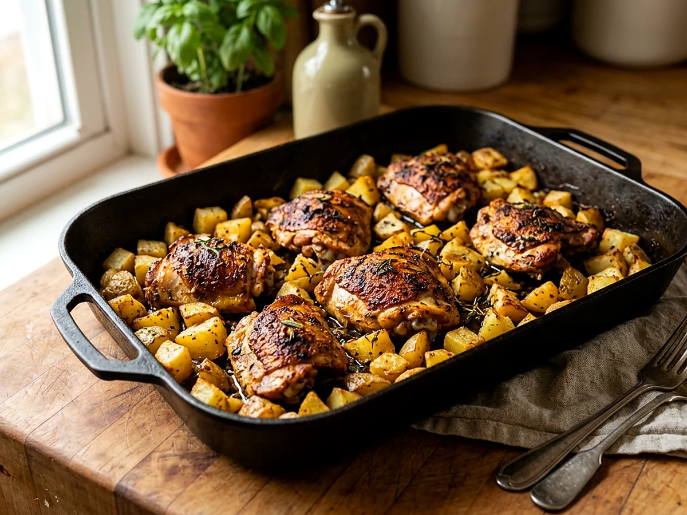

Chicken & PotatoesEasy Family Dinner
Chicken thighs and Yukon gold potatoes with paprika, garlic, salt, and pepper—a one-pan dinner built from everyday ingredients.

Watch the recipe
Cook it with Jadon.
Play the video here, then keep the measured ingredient list and full method open beside you while you cook.
Open on YouTube ↗Cook in this order
Method
- Heat the oven to 425°F. Line a large sheet pan with foil or parchment.
- Toss the potatoes with 2 tablespoons avocado oil, 1 teaspoon salt, ½ teaspoon pepper, 1 teaspoon garlic powder, and 1 teaspoon paprika. Spread them on the pan and roast for 15 minutes.
- Toss the chicken with the remaining avocado oil, salt, pepper, garlic powder, and paprika.
- Turn the potatoes, add the chicken in a single layer, and return the pan to the oven.
- Roast for another 20–30 minutes, turning once, until the potatoes are tender and browned and the chicken reaches 165°F.
- Rest the chicken for 5 minutes, then serve it with the roasted potatoes.
Food-safety checkChicken is safe at 165°F. Check the thickest piece with an instant-read thermometer before serving.
Ready for the next one?
Browse every Jadon Cooks recipe and watch the matching video.
See all recipes